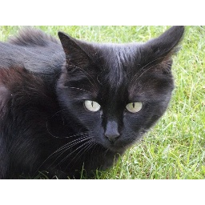
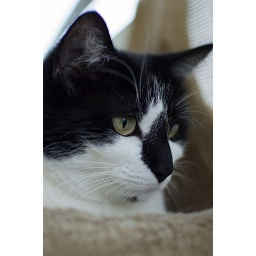
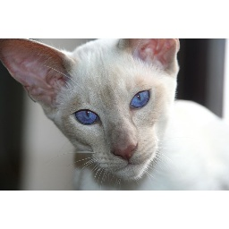
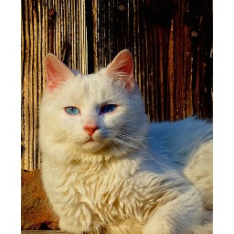
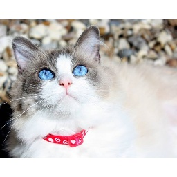
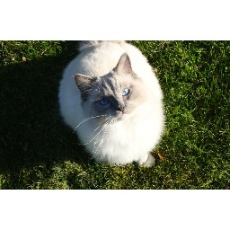

Install clip + autofaiss¶
[1]:
!pip install clip-retrieval img2dataset autofaiss
Collecting clip-retrieval
Downloading clip_retrieval-1.0.1-py3-none-any.whl (10 kB)
Collecting img2dataset
Downloading img2dataset-1.0.1-py3-none-any.whl (5.5 kB)
Collecting autofaiss
Downloading autofaiss-1.3.0.tar.gz (33 kB)
Collecting flask-restful
Downloading Flask_RESTful-0.3.9-py2.py3-none-any.whl (25 kB)
Requirement already satisfied: torchvision in /usr/local/lib/python3.7/dist-packages (from clip-retrieval) (0.10.0+cu102)
Requirement already satisfied: numpy in /usr/local/lib/python3.7/dist-packages (from clip-retrieval) (1.19.5)
Requirement already satisfied: torch in /usr/local/lib/python3.7/dist-packages (from clip-retrieval) (1.9.0+cu102)
Collecting clip-anytorch
Downloading clip_anytorch-2.2.0-py3-none-any.whl (1.4 MB)
|████████████████████████████████| 1.4 MB 13.4 MB/s
Requirement already satisfied: flask in /usr/local/lib/python3.7/dist-packages (from clip-retrieval) (1.1.4)
Requirement already satisfied: tqdm in /usr/local/lib/python3.7/dist-packages (from clip-retrieval) (4.41.1)
Collecting flask-cors
Downloading Flask_Cors-3.0.10-py2.py3-none-any.whl (14 kB)
Collecting faiss-cpu
Downloading faiss_cpu-1.7.1.post2-cp37-cp37m-manylinux_2_17_x86_64.manylinux2014_x86_64.whl (8.4 MB)
|████████████████████████████████| 8.4 MB 16.3 MB/s
Collecting fire
Downloading fire-0.4.0.tar.gz (87 kB)
|████████████████████████████████| 87 kB 8.7 MB/s
Requirement already satisfied: opencv-python in /usr/local/lib/python3.7/dist-packages (from img2dataset) (4.1.2.30)
Collecting dataclasses
Downloading dataclasses-0.6-py3-none-any.whl (14 kB)
Requirement already satisfied: pandas>=1.0.5 in /usr/local/lib/python3.7/dist-packages (from autofaiss) (1.1.5)
Requirement already satisfied: pyarrow>=0.14 in /usr/local/lib/python3.7/dist-packages (from autofaiss) (3.0.0)
Collecting tqdm
Downloading tqdm-4.62.0-py2.py3-none-any.whl (76 kB)
|████████████████████████████████| 76 kB 5.7 MB/s
Requirement already satisfied: six in /usr/local/lib/python3.7/dist-packages (from fire->clip-retrieval) (1.15.0)
Requirement already satisfied: termcolor in /usr/local/lib/python3.7/dist-packages (from fire->clip-retrieval) (1.1.0)
Requirement already satisfied: pytz>=2017.2 in /usr/local/lib/python3.7/dist-packages (from pandas>=1.0.5->autofaiss) (2018.9)
Requirement already satisfied: python-dateutil>=2.7.3 in /usr/local/lib/python3.7/dist-packages (from pandas>=1.0.5->autofaiss) (2.8.1)
Requirement already satisfied: regex in /usr/local/lib/python3.7/dist-packages (from clip-anytorch->clip-retrieval) (2019.12.20)
Collecting ftfy
Downloading ftfy-6.0.3.tar.gz (64 kB)
|████████████████████████████████| 64 kB 3.7 MB/s
Requirement already satisfied: click<8.0,>=5.1 in /usr/local/lib/python3.7/dist-packages (from flask->clip-retrieval) (7.1.2)
Requirement already satisfied: Werkzeug<2.0,>=0.15 in /usr/local/lib/python3.7/dist-packages (from flask->clip-retrieval) (1.0.1)
Requirement already satisfied: Jinja2<3.0,>=2.10.1 in /usr/local/lib/python3.7/dist-packages (from flask->clip-retrieval) (2.11.3)
Requirement already satisfied: itsdangerous<2.0,>=0.24 in /usr/local/lib/python3.7/dist-packages (from flask->clip-retrieval) (1.1.0)
Requirement already satisfied: MarkupSafe>=0.23 in /usr/local/lib/python3.7/dist-packages (from Jinja2<3.0,>=2.10.1->flask->clip-retrieval) (2.0.1)
Collecting aniso8601>=0.82
Downloading aniso8601-9.0.1-py2.py3-none-any.whl (52 kB)
|████████████████████████████████| 52 kB 1.7 MB/s
Requirement already satisfied: wcwidth in /usr/local/lib/python3.7/dist-packages (from ftfy->clip-anytorch->clip-retrieval) (0.2.5)
Requirement already satisfied: typing-extensions in /usr/local/lib/python3.7/dist-packages (from torch->clip-retrieval) (3.7.4.3)
Requirement already satisfied: pillow>=5.3.0 in /usr/local/lib/python3.7/dist-packages (from torchvision->clip-retrieval) (7.1.2)
Building wheels for collected packages: autofaiss, fire, ftfy
Building wheel for autofaiss (setup.py) ... done
Created wheel for autofaiss: filename=autofaiss-1.3.0-py3-none-any.whl size=48780 sha256=78f88a5d535fc3273231ed722ef8bd4dcfa832d7ecba4c61aa7bf91ef8a7691e
Stored in directory: /root/.cache/pip/wheels/a6/2f/e3/d2d4bda1af309cd9e86bd83652372762f5bae5460d4d5108cf
Building wheel for fire (setup.py) ... done
Created wheel for fire: filename=fire-0.4.0-py2.py3-none-any.whl size=115943 sha256=a9a2ecaa4a312b5c6e9f530d4dbeb41f1387779d5b4032232d018a554f5a9103
Stored in directory: /root/.cache/pip/wheels/8a/67/fb/2e8a12fa16661b9d5af1f654bd199366799740a85c64981226
Building wheel for ftfy (setup.py) ... done
Created wheel for ftfy: filename=ftfy-6.0.3-py3-none-any.whl size=41934 sha256=eb1f8693c149dda4dd1d24de8e1d363c2691206422a5ca97325fec61649a14cd
Stored in directory: /root/.cache/pip/wheels/19/f5/38/273eb3b5e76dfd850619312f693716ac4518b498f5ffb6f56d
Successfully built autofaiss fire ftfy
Installing collected packages: tqdm, ftfy, aniso8601, flask-restful, flask-cors, fire, faiss-cpu, dataclasses, clip-anytorch, img2dataset, clip-retrieval, autofaiss
Attempting uninstall: tqdm
Found existing installation: tqdm 4.41.1
Uninstalling tqdm-4.41.1:
Successfully uninstalled tqdm-4.41.1
Successfully installed aniso8601-9.0.1 autofaiss-1.3.0 clip-anytorch-2.2.0 clip-retrieval-1.0.1 dataclasses-0.6 faiss-cpu-1.7.1.post2 fire-0.4.0 flask-cors-3.0.10 flask-restful-0.3.9 ftfy-6.0.3 img2dataset-1.0.1 tqdm-4.62.0
Download dataset¶
[56]:
!wget https://raw.githubusercontent.com/knok/pixabay-cat-images/master/classified-cat-jp-images.txt -O myimglist.txt
--2021-08-11 23:59:58-- https://raw.githubusercontent.com/knok/pixabay-cat-images/master/classified-cat-jp-images.txt
Resolving raw.githubusercontent.com (raw.githubusercontent.com)... 185.199.109.133, 185.199.108.133, 185.199.111.133, ...
Connecting to raw.githubusercontent.com (raw.githubusercontent.com)|185.199.109.133|:443... connected.
HTTP request sent, awaiting response... 200 OK
Length: 77377 (76K) [text/plain]
Saving to: ‘myimglist.txt’
myimglist.txt 100%[===================>] 75.56K --.-KB/s in 0.008s
2021-08-11 23:59:59 (9.13 MB/s) - ‘myimglist.txt’ saved [77377/77377]
[ ]:
# download pictures
[57]:
!rm -rf image_folder
[58]:
!img2dataset --url_list=myimglist.txt --output_folder=image_folder --thread_count=256 --image_size=256
1129it [00:00, 330174.96it/s]
100% 1129/1129 [00:10<00:00, 107.55it/s]
[59]:
!ls image_folder/*
0.jpg 1128.jpg 23.jpg 368.jpg 496.jpg 623.jpg 751.jpg 87.jpg
1000.jpg 112.jpg 240.jpg 369.jpg 497.jpg 624.jpg 752.jpg 880.jpg
1001.jpg 113.jpg 241.jpg 36.jpg 498.jpg 625.jpg 753.jpg 881.jpg
1002.jpg 114.jpg 242.jpg 370.jpg 499.jpg 626.jpg 754.jpg 882.jpg
1003.jpg 115.jpg 243.jpg 371.jpg 49.jpg 627.jpg 755.jpg 883.jpg
1004.jpg 116.jpg 244.jpg 372.jpg 4.jpg 628.jpg 756.jpg 884.jpg
1005.jpg 117.jpg 245.jpg 373.jpg 500.jpg 629.jpg 757.jpg 885.jpg
1006.jpg 118.jpg 246.jpg 374.jpg 501.jpg 62.jpg 758.jpg 886.jpg
1007.jpg 119.jpg 247.jpg 375.jpg 502.jpg 630.jpg 759.jpg 887.jpg
1008.jpg 11.jpg 248.jpg 376.jpg 503.jpg 631.jpg 75.jpg 888.jpg
1009.jpg 120.jpg 249.jpg 377.jpg 504.jpg 632.jpg 760.jpg 889.jpg
100.jpg 121.jpg 24.jpg 378.jpg 505.jpg 633.jpg 761.jpg 88.jpg
1010.jpg 122.jpg 250.jpg 379.jpg 506.jpg 634.jpg 762.jpg 890.jpg
1011.jpg 123.jpg 251.jpg 37.jpg 507.jpg 635.jpg 763.jpg 891.jpg
1012.jpg 124.jpg 252.jpg 380.jpg 508.jpg 636.jpg 764.jpg 892.jpg
1013.jpg 125.jpg 253.jpg 381.jpg 509.jpg 637.jpg 765.jpg 893.jpg
1014.jpg 126.jpg 254.jpg 382.jpg 50.jpg 638.jpg 766.jpg 894.jpg
1015.jpg 127.jpg 255.jpg 383.jpg 510.jpg 639.jpg 767.jpg 895.jpg
1016.jpg 128.jpg 256.jpg 384.jpg 511.jpg 63.jpg 768.jpg 896.jpg
1017.jpg 129.jpg 257.jpg 385.jpg 512.jpg 640.jpg 769.jpg 897.jpg
1018.jpg 12.jpg 258.jpg 386.jpg 513.jpg 641.jpg 76.jpg 898.jpg
1019.jpg 130.jpg 259.jpg 387.jpg 514.jpg 642.jpg 770.jpg 899.jpg
101.jpg 131.jpg 25.jpg 388.jpg 515.jpg 643.jpg 771.jpg 89.jpg
1020.jpg 132.jpg 260.jpg 389.jpg 516.jpg 644.jpg 772.jpg 8.jpg
1021.jpg 133.jpg 261.jpg 38.jpg 517.jpg 645.jpg 773.jpg 900.jpg
1022.jpg 134.jpg 262.jpg 390.jpg 518.jpg 646.jpg 774.jpg 901.jpg
1023.jpg 135.jpg 263.jpg 391.jpg 519.jpg 647.jpg 775.jpg 902.jpg
1024.jpg 136.jpg 264.jpg 392.jpg 51.jpg 648.jpg 776.jpg 903.jpg
1025.jpg 137.jpg 265.jpg 393.jpg 520.jpg 649.jpg 777.jpg 904.jpg
1026.jpg 138.jpg 266.jpg 394.jpg 521.jpg 64.jpg 778.jpg 905.jpg
1027.jpg 139.jpg 267.jpg 395.jpg 522.jpg 650.jpg 779.jpg 906.jpg
1028.jpg 13.jpg 268.jpg 396.jpg 523.jpg 651.jpg 77.jpg 907.jpg
1029.jpg 140.jpg 269.jpg 397.jpg 524.jpg 652.jpg 780.jpg 908.jpg
102.jpg 141.jpg 26.jpg 398.jpg 525.jpg 653.jpg 781.jpg 909.jpg
1030.jpg 142.jpg 270.jpg 399.jpg 526.jpg 654.jpg 782.jpg 90.jpg
1031.jpg 143.jpg 271.jpg 39.jpg 527.jpg 655.jpg 783.jpg 910.jpg
1032.jpg 144.jpg 272.jpg 3.jpg 528.jpg 656.jpg 784.jpg 911.jpg
1033.jpg 145.jpg 273.jpg 400.jpg 529.jpg 657.jpg 785.jpg 912.jpg
1034.jpg 146.jpg 274.jpg 401.jpg 52.jpg 658.jpg 786.jpg 913.jpg
1035.jpg 147.jpg 275.jpg 402.jpg 530.jpg 659.jpg 787.jpg 914.jpg
1036.jpg 148.jpg 276.jpg 403.jpg 531.jpg 65.jpg 788.jpg 915.jpg
1037.jpg 149.jpg 277.jpg 404.jpg 532.jpg 660.jpg 789.jpg 916.jpg
1038.jpg 14.jpg 278.jpg 405.jpg 533.jpg 661.jpg 78.jpg 917.jpg
1039.jpg 150.jpg 279.jpg 406.jpg 534.jpg 662.jpg 790.jpg 918.jpg
103.jpg 151.jpg 27.jpg 407.jpg 535.jpg 663.jpg 791.jpg 919.jpg
1040.jpg 152.jpg 280.jpg 408.jpg 536.jpg 664.jpg 792.jpg 91.jpg
1041.jpg 153.jpg 281.jpg 409.jpg 537.jpg 665.jpg 793.jpg 920.jpg
1042.jpg 154.jpg 282.jpg 40.jpg 538.jpg 666.jpg 794.jpg 921.jpg
1043.jpg 155.jpg 283.jpg 410.jpg 539.jpg 667.jpg 795.jpg 922.jpg
1044.jpg 156.jpg 284.jpg 411.jpg 53.jpg 668.jpg 796.jpg 923.jpg
1045.jpg 157.jpg 285.jpg 412.jpg 540.jpg 669.jpg 797.jpg 924.jpg
1046.jpg 158.jpg 286.jpg 413.jpg 541.jpg 66.jpg 798.jpg 925.jpg
1047.jpg 159.jpg 287.jpg 414.jpg 542.jpg 670.jpg 799.jpg 926.jpg
1048.jpg 15.jpg 288.jpg 415.jpg 543.jpg 671.jpg 79.jpg 927.jpg
1049.jpg 160.jpg 289.jpg 416.jpg 544.jpg 672.jpg 7.jpg 928.jpg
104.jpg 161.jpg 28.jpg 417.jpg 545.jpg 673.jpg 800.jpg 929.jpg
1050.jpg 162.jpg 290.jpg 418.jpg 546.jpg 674.jpg 801.jpg 92.jpg
1051.jpg 163.jpg 291.jpg 419.jpg 547.jpg 675.jpg 802.jpg 930.jpg
1052.jpg 164.jpg 292.jpg 41.jpg 548.jpg 676.jpg 803.jpg 931.jpg
1053.jpg 165.jpg 293.jpg 420.jpg 549.jpg 677.jpg 804.jpg 932.jpg
1054.jpg 166.jpg 294.jpg 421.jpg 54.jpg 678.jpg 805.jpg 933.jpg
1055.jpg 167.jpg 295.jpg 422.jpg 550.jpg 679.jpg 806.jpg 934.jpg
1056.jpg 168.jpg 296.jpg 423.jpg 551.jpg 67.jpg 807.jpg 935.jpg
1057.jpg 169.jpg 297.jpg 424.jpg 552.jpg 680.jpg 808.jpg 936.jpg
1058.jpg 16.jpg 298.jpg 425.jpg 553.jpg 681.jpg 809.jpg 937.jpg
1059.jpg 170.jpg 299.jpg 426.jpg 554.jpg 682.jpg 80.jpg 938.jpg
105.jpg 171.jpg 29.jpg 427.jpg 555.jpg 683.jpg 810.jpg 939.jpg
1060.jpg 172.jpg 2.jpg 428.jpg 556.jpg 684.jpg 811.jpg 93.jpg
1061.jpg 173.jpg 300.jpg 429.jpg 557.jpg 685.jpg 812.jpg 940.jpg
1062.jpg 174.jpg 301.jpg 42.jpg 558.jpg 686.jpg 813.jpg 941.jpg
1063.jpg 175.jpg 302.jpg 430.jpg 559.jpg 687.jpg 814.jpg 942.jpg
1064.jpg 176.jpg 303.jpg 431.jpg 55.jpg 688.jpg 815.jpg 943.jpg
1065.jpg 177.jpg 304.jpg 432.jpg 560.jpg 689.jpg 816.jpg 944.jpg
1066.jpg 178.jpg 305.jpg 433.jpg 561.jpg 68.jpg 817.jpg 945.jpg
1067.jpg 179.jpg 306.jpg 434.jpg 562.jpg 690.jpg 818.jpg 946.jpg
1068.jpg 17.jpg 307.jpg 435.jpg 563.jpg 691.jpg 819.jpg 947.jpg
1069.jpg 180.jpg 308.jpg 436.jpg 564.jpg 692.jpg 81.jpg 948.jpg
106.jpg 181.jpg 309.jpg 437.jpg 565.jpg 693.jpg 820.jpg 949.jpg
1070.jpg 182.jpg 30.jpg 438.jpg 566.jpg 694.jpg 821.jpg 94.jpg
1071.jpg 183.jpg 310.jpg 439.jpg 567.jpg 695.jpg 822.jpg 950.jpg
1072.jpg 184.jpg 311.jpg 43.jpg 568.jpg 696.jpg 823.jpg 951.jpg
1073.jpg 185.jpg 312.jpg 440.jpg 569.jpg 697.jpg 824.jpg 952.jpg
1074.jpg 186.jpg 313.jpg 441.jpg 56.jpg 698.jpg 825.jpg 953.jpg
1075.jpg 187.jpg 314.jpg 442.jpg 570.jpg 699.jpg 826.jpg 954.jpg
1076.jpg 188.jpg 315.jpg 443.jpg 571.jpg 69.jpg 827.jpg 955.jpg
1077.jpg 189.jpg 316.jpg 444.jpg 572.jpg 6.jpg 828.jpg 956.jpg
1078.jpg 18.jpg 317.jpg 445.jpg 573.jpg 700.jpg 829.jpg 957.jpg
1079.jpg 190.jpg 318.jpg 446.jpg 574.jpg 701.jpg 82.jpg 958.jpg
107.jpg 191.jpg 319.jpg 447.jpg 575.jpg 702.jpg 830.jpg 959.jpg
1080.jpg 192.jpg 31.jpg 448.jpg 576.jpg 703.jpg 831.jpg 95.jpg
1081.jpg 193.jpg 320.jpg 449.jpg 577.jpg 704.jpg 832.jpg 960.jpg
1082.jpg 194.jpg 321.jpg 44.jpg 578.jpg 705.jpg 833.jpg 961.jpg
1083.jpg 195.jpg 322.jpg 450.jpg 579.jpg 706.jpg 834.jpg 962.jpg
1084.jpg 196.jpg 323.jpg 451.jpg 57.jpg 707.jpg 835.jpg 963.jpg
1085.jpg 197.jpg 324.jpg 452.jpg 580.jpg 708.jpg 836.jpg 964.jpg
1086.jpg 198.jpg 325.jpg 453.jpg 581.jpg 709.jpg 837.jpg 965.jpg
1087.jpg 199.jpg 326.jpg 454.jpg 582.jpg 70.jpg 838.jpg 966.jpg
1088.jpg 19.jpg 327.jpg 455.jpg 583.jpg 710.jpg 839.jpg 967.jpg
1089.jpg 1.jpg 328.jpg 456.jpg 584.jpg 711.jpg 83.jpg 968.jpg
108.jpg 200.jpg 329.jpg 457.jpg 585.jpg 712.jpg 840.jpg 969.jpg
1090.jpg 201.jpg 32.jpg 458.jpg 586.jpg 713.jpg 841.jpg 96.jpg
1091.jpg 202.jpg 330.jpg 459.jpg 587.jpg 714.jpg 842.jpg 970.jpg
1092.jpg 203.jpg 331.jpg 45.jpg 588.jpg 715.jpg 843.jpg 971.jpg
1093.jpg 204.jpg 332.jpg 460.jpg 589.jpg 716.jpg 844.jpg 972.jpg
1094.jpg 205.jpg 333.jpg 461.jpg 58.jpg 717.jpg 845.jpg 973.jpg
1095.jpg 206.jpg 334.jpg 462.jpg 590.jpg 718.jpg 846.jpg 974.jpg
1096.jpg 207.jpg 335.jpg 463.jpg 591.jpg 719.jpg 847.jpg 975.jpg
1097.jpg 208.jpg 336.jpg 464.jpg 592.jpg 71.jpg 848.jpg 976.jpg
1098.jpg 209.jpg 337.jpg 465.jpg 593.jpg 720.jpg 849.jpg 977.jpg
1099.jpg 20.jpg 338.jpg 466.jpg 594.jpg 721.jpg 84.jpg 978.jpg
109.jpg 210.jpg 339.jpg 467.jpg 595.jpg 722.jpg 850.jpg 979.jpg
10.jpg 211.jpg 33.jpg 468.jpg 596.jpg 723.jpg 851.jpg 97.jpg
1100.jpg 212.jpg 340.jpg 469.jpg 597.jpg 724.jpg 852.jpg 980.jpg
1101.jpg 213.jpg 341.jpg 46.jpg 598.jpg 725.jpg 853.jpg 981.jpg
1102.jpg 214.jpg 342.jpg 470.jpg 599.jpg 726.jpg 854.jpg 982.jpg
1103.jpg 215.jpg 343.jpg 471.jpg 59.jpg 727.jpg 855.jpg 983.jpg
1104.jpg 216.jpg 344.jpg 472.jpg 5.jpg 728.jpg 856.jpg 984.jpg
1105.jpg 217.jpg 345.jpg 473.jpg 600.jpg 729.jpg 857.jpg 985.jpg
1106.jpg 218.jpg 346.jpg 474.jpg 601.jpg 72.jpg 858.jpg 986.jpg
1107.jpg 219.jpg 347.jpg 475.jpg 602.jpg 730.jpg 859.jpg 987.jpg
1108.jpg 21.jpg 348.jpg 476.jpg 603.jpg 731.jpg 85.jpg 988.jpg
1109.jpg 220.jpg 349.jpg 477.jpg 604.jpg 732.jpg 860.jpg 989.jpg
110.jpg 221.jpg 34.jpg 478.jpg 605.jpg 733.jpg 861.jpg 98.jpg
1110.jpg 222.jpg 350.jpg 479.jpg 606.jpg 734.jpg 862.jpg 990.jpg
1111.jpg 223.jpg 351.jpg 47.jpg 607.jpg 735.jpg 863.jpg 991.jpg
1112.jpg 224.jpg 352.jpg 480.jpg 608.jpg 736.jpg 864.jpg 992.jpg
1113.jpg 225.jpg 353.jpg 481.jpg 609.jpg 737.jpg 865.jpg 993.jpg
1114.jpg 226.jpg 354.jpg 482.jpg 60.jpg 738.jpg 866.jpg 994.jpg
1115.jpg 227.jpg 355.jpg 483.jpg 610.jpg 739.jpg 867.jpg 995.jpg
1116.jpg 228.jpg 356.jpg 484.jpg 611.jpg 73.jpg 868.jpg 996.jpg
1117.jpg 229.jpg 357.jpg 485.jpg 612.jpg 740.jpg 869.jpg 997.jpg
1118.jpg 22.jpg 358.jpg 486.jpg 613.jpg 741.jpg 86.jpg 998.jpg
1119.jpg 230.jpg 359.jpg 487.jpg 614.jpg 742.jpg 870.jpg 999.jpg
111.jpg 231.jpg 35.jpg 488.jpg 615.jpg 743.jpg 871.jpg 99.jpg
1120.jpg 232.jpg 360.jpg 489.jpg 616.jpg 744.jpg 872.jpg 9.jpg
1121.jpg 233.jpg 361.jpg 48.jpg 617.jpg 745.jpg 873.jpg
1122.jpg 234.jpg 362.jpg 490.jpg 618.jpg 746.jpg 874.jpg
1123.jpg 235.jpg 363.jpg 491.jpg 619.jpg 747.jpg 875.jpg
1124.jpg 236.jpg 364.jpg 492.jpg 61.jpg 748.jpg 876.jpg
1125.jpg 237.jpg 365.jpg 493.jpg 620.jpg 749.jpg 877.jpg
1126.jpg 238.jpg 366.jpg 494.jpg 621.jpg 74.jpg 878.jpg
1127.jpg 239.jpg 367.jpg 495.jpg 622.jpg 750.jpg 879.jpg
Build clip image embeddings¶
[60]:
!rm -rf embedding_folder
[61]:
!clip-retrieval batch --dataset_path image_folder --output_folder embedding_folder
/usr/local/lib/python3.7/dist-packages/torch/utils/data/dataloader.py:481: UserWarning: This DataLoader will create 8 worker processes in total. Our suggested max number of worker in current system is 2, which is smaller than what this DataLoader is going to create. Please be aware that excessive worker creation might get DataLoader running slow or even freeze, lower the worker number to avoid potential slowness/freeze if necessary.
cpuset_checked))
100% 5/5 [00:05<00:00, 1.05s/it]
[62]:
!ls embedding_folder
image.index image_list img_emb.npy
[63]:
with open("embedding_folder/image_list") as f:
image_list = [x for x in f.read().split("\n") if x != ""]
Build the index¶
[64]:
!rm -rf my_index_folder
[65]:
# Build a KNN index
!autofaiss quantize --embeddings_path="embedding_folder" \
--output_path="my_index_folder" \
--metric_type="ip" \
--max_index_query_time_ms=5 \
--max_index_memory_usage="1GB"
Launching the whole pipeline 08/12/2021, 00:00:56
Compute estimated construction time of the index 08/12/2021, 00:00:56
-> Train: 16.7 minutes
-> Add: 0.0 seconds
Total: 16.7 minutes
>>> Finished "Compute estimated construction time of the index" in 0.0001 secs
Checking that your have enough memory available to create the index 08/12/2021, 00:00:56
>>> Finished "Checking that your have enough memory available to create the index" in 0.0004 secs
Selecting most promising index types given data characteristics 08/12/2021, 00:00:56
>>> Finished "Selecting most promising index types given data characteristics" in 0.0024 secs
Creating the index 08/12/2021, 00:00:56
-> Instanciate the index HNSW15 08/12/2021, 00:00:56
>>> Finished "-> Instanciate the index HNSW15" in 0.0027 secs
-> Extract training vectors 08/12/2021, 00:00:56
100% 1/1 [00:00<00:00, 1772.74it/s]
>>> Finished "-> Extract training vectors" in 0.0061 secs
-> Training the index with 1129 vectors of dim 512 08/12/2021, 00:00:56
>>> Finished "-> Training the index with 1129 vectors of dim 512" in 0.0000 secs
-> Adding the vectors to the index 08/12/2021, 00:00:56
100% 1/1 [00:00<00:00, 1100.29it/s]
>>> Finished "-> Adding the vectors to the index" in 0.1523 secs
>>> Finished "Creating the index" in 0.1615 secs
Computing best hyperparameters 08/12/2021, 00:00:56
>>> Finished "Computing best hyperparameters" in 1.5012 secs
The best hyperparameters are: efSearch=16383
Saving the index on local disk 08/12/2021, 00:00:58
>>> Finished "Saving the index on local disk" in 0.0022 secs
Compute fast metrics 08/12/2021, 00:00:58
2000
>>> Finished "Compute fast metrics" in 5.8637 secs
Recap:
{'99p_search_speed_ms': 5.094717409851909,
'avg_search_speed_ms': 2.9239900855036467,
'compression ratio': 0.9376627695252463,
'nb vectors': 1129,
'reconstruction error %': 0.0,
'size in bytes': 2465910,
'vectors dimension': 512}
>>> Finished "Launching the whole pipeline" in 7.5394 secs
Done
[66]:
!ls my_index_folder
'HNSW15-efSearch=16383.index'
Load the index¶
[67]:
import faiss
import numpy as np
ind = faiss.read_index("my_index_folder/HNSW15-efSearch=16383.index")
Simple image query from dataset¶
[69]:
image_number = 600
from IPython.display import Image
print("query :")
display(Image(filename=image_list[image_number]))
D, I = ind.search(np.expand_dims(ind.reconstruct(image_number), 0), 5)
print("results :")
for d, i in zip(D[0], I[0]):
print("similarity=", d)
print(i)
display(Image(filename=image_list[i]))
query :

results :
similarity= 0.99935955
600

similarity= 0.9325836
320
similarity= 0.93186533
12

similarity= 0.92870843
570
similarity= 0.9276604
398

[ ]:
Text to image query¶
[76]:
import clip
import torch
device = "cuda" if torch.cuda.is_available() else "cpu"
model, preprocess = clip.load("ViT-B/32", device=device, jit=False)
[74]:
from IPython.display import Image
text = "a white cat with blue eyes"
text_tokens = clip.tokenize([text], truncate=True)
text_features = model.encode_text(text_tokens.to(device))
text_features /= text_features.norm(dim=-1, keepdim=True)
text_embeddings = text_features.cpu().detach().numpy().astype('float32')
print("query :")
print(text)
D, I = ind.search(text_embeddings, 5)
print("results :")
for d, i in zip(D[0], I[0]):
print("similarity=", d)
print(i)
display(Image(filename=image_list[i]))
query :
a white cat with blue eyes
results :
similarity= 0.34641433
905

similarity= 0.33463004
591
similarity= 0.3332157
210

similarity= 0.3301032
1095

similarity= 0.32439187
341

Image to image query¶
[84]:
!rm newcat.jpg
!wget https://thiscatdoesnotexist.com/ -O newcat.jpg
from PIL import Image
image = Image.open("newcat.jpg")
image_tensor = preprocess(image)
image_features = model.encode_image(torch.unsqueeze(image_tensor.to(device), dim=0))
image_features /= image_features.norm(dim=-1, keepdim=True)
image_embeddings = image_features.cpu().detach().numpy().astype('float32')
print("query :")
display(image)
D, I = ind.search(image_embeddings, 5)
print("results :")
for d, i in zip(D[0], I[0]):
print("similarity=", d)
print(i)
display(Image.open(image_list[i]))
--2021-08-12 00:12:21-- https://thiscatdoesnotexist.com/
Resolving thiscatdoesnotexist.com (thiscatdoesnotexist.com)... 95.216.76.20
Connecting to thiscatdoesnotexist.com (thiscatdoesnotexist.com)|95.216.76.20|:443... connected.
HTTP request sent, awaiting response... 200 OK
Length: 164012 (160K) [image/jpeg]
Saving to: ‘newcat.jpg’
newcat.jpg 100%[===================>] 160.17K 494KB/s in 0.3s
2021-08-12 00:12:22 (494 KB/s) - ‘newcat.jpg’ saved [164012/164012]
query :

results :
similarity= 0.9142024
315

similarity= 0.90784425
678

similarity= 0.90682137
496

similarity= 0.9041809
949

similarity= 0.9040538
733